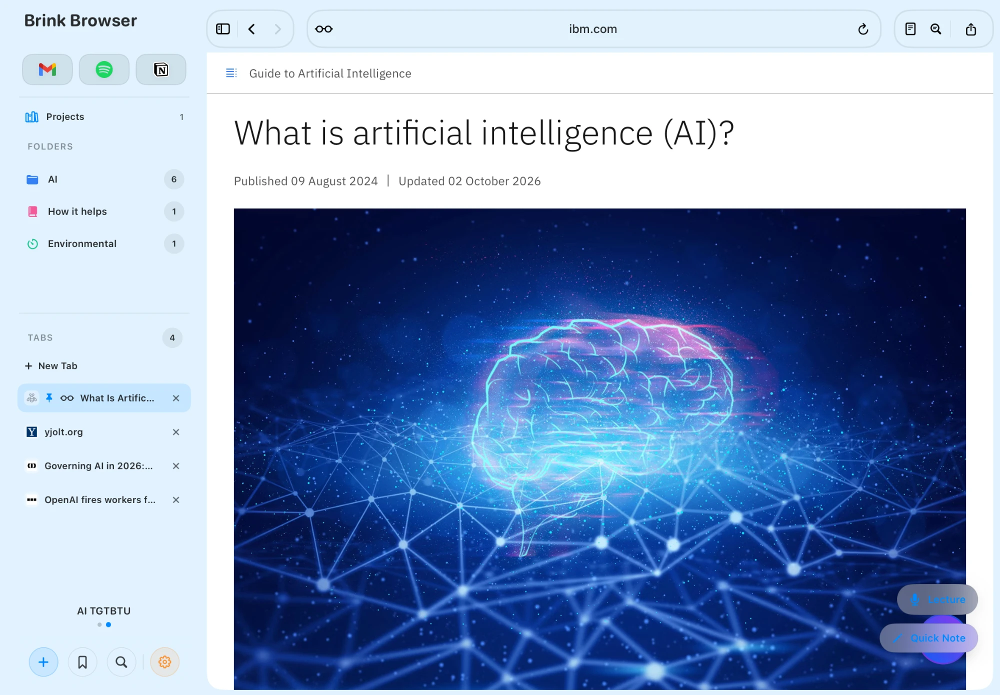
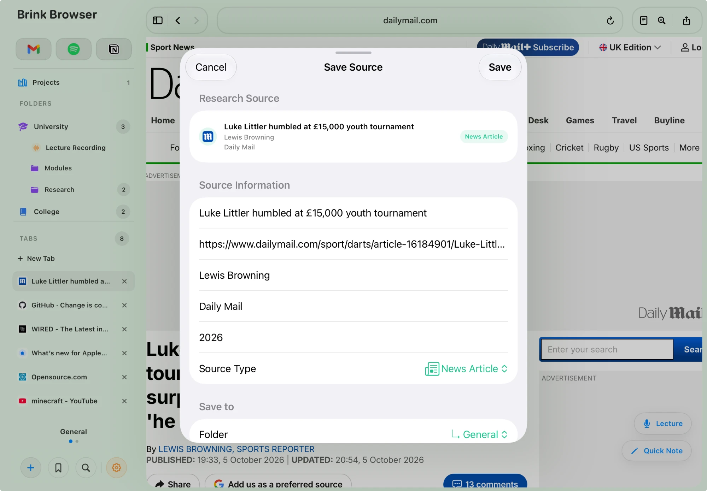
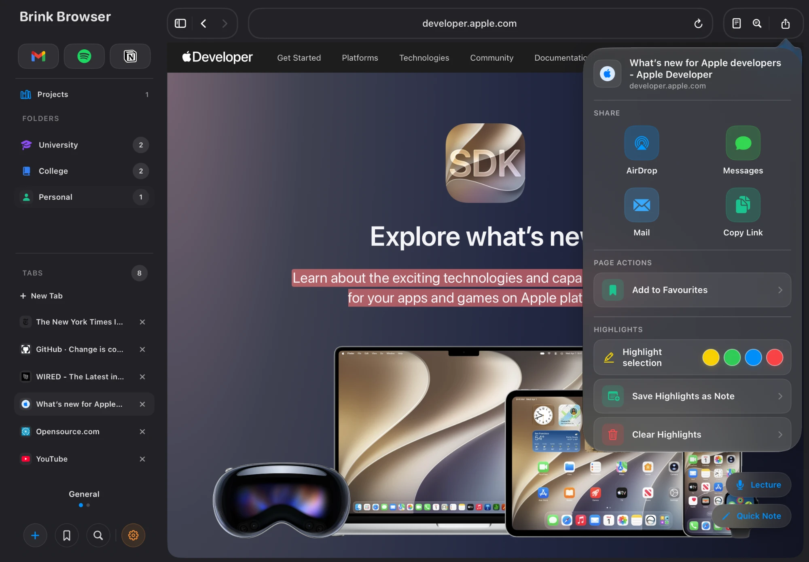

Your research has a place
to actually live
Brink goes beyond bookmarks. Build separate research projects, organise sources into folders, save different types of material and create citations without leaving your browser.
Separate workspaces
for every project
Create dedicated research projects for different assignments, modules, papers or topics. Each project keeps its own folders and saved research separate, so the material for one piece of work never has to get mixed into another.
Switch between projects directly from the sidebar, while General stays available as your default workspace for everything else.
- Independent research workspaces
- Project-specific folders and saved research
- Quick project switching from the sidebar
- General workspace always available
- Projects persist across app launches

Organise research
the way you think
Inside each project, use folders and subfolders to structure your work around subjects, chapters, assignments or whatever makes sense to you. Expand and collapse sections as your research grows, while keeping the browser and your material side by side.
- Nested folders and subfolders
- Project-specific organisation
- Expand and collapse folders
- Persistent across sessions

Keep more than links
with your research
Save websites, notes, images, PDFs and lecture recordings alongside each other. When you save from inside a project, Brink keeps that material with the project you're already working in, helping the whole research trail stay together.
- Websites and articles
- Quick notes and research notes
- Images and PDFs
- Lecture recordings
- Organised inside project folders

Turn sources into
ready-to-use references
Brink can pull useful source details from the page you're researching, including information such as the article title, author, publication and date, then build the citation inside the browser.
Choose Harvard, APA, MLA, IEEE or Chicago and copy either the full reference or the in-text citation when you need it.
- Harvard, APA, MLA, IEEE and Chicago styles
- Automatic source metadata where available
- Copy full references separately
- Copy in-text citations separately
- IEEE numbered in-text citations

Highlight what matters,
without losing the source
Select important text on a webpage and highlight it in yellow, green, blue or red. Highlights stay associated with the page so you can return to the material you've already picked out instead of starting again.
- Four highlight colours
- Highlights persist when you return
- Useful for extracting key research points
